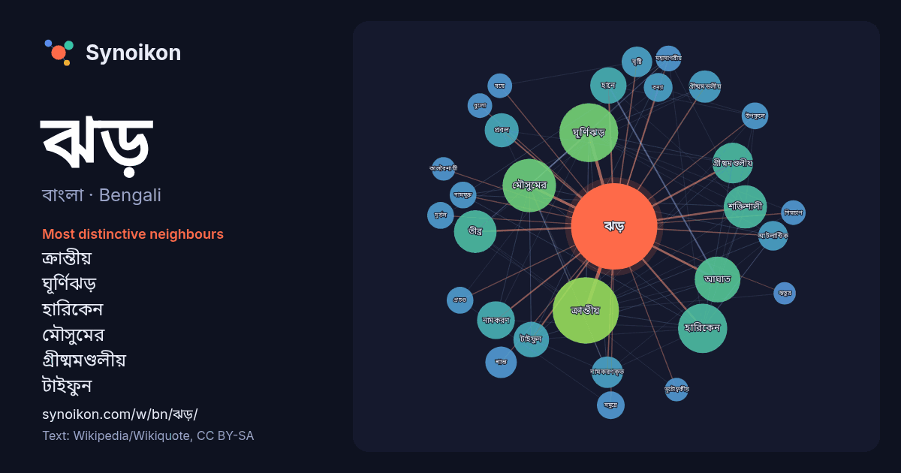

বাংলা · Bengali · word of the day list
ঝড়
“storm” · The words found around it in 1023 instances from Bengali Wikipedia, Wikiquote.

Most distinctive neighbours
- ক্রান্তীয় 62×
- ঘূর্ণিঝড় 53×
- হারিকেন 41×
- মৌসুমের 33×
- গ্রীষ্মমণ্ডলীয় 29×
- টাইফুন 23×
- হানে 22×
- আঘাত 21×
- তীব্র 20×
- গ্রীষ্মমন্ডলীয় 19×
- নামকরণকৃত 18×
- প্রবল 17×
- শক্তিশালী 16×
- শান্ত 16×
- বৃষ্টি 15×
- আটলান্টিক 14×
- নামযুক্ত 14×
- বন্যা 13×
- সমুদ্রে 13×
- ধুলো 12×
× = how many times more often than in general Bengali Wikipedia text.
Most frequent neighbours
- ক্রান্তীয় 80
- ঘূর্ণিঝড় 63
- মৌসুমের 52
- হারিকেন 44
- আঘাত 38
- সবচেয়ে 37
- শক্তিশালী 34
- তীব্র 33
- সালের 32
- সৃষ্টি 31
- গ্রীষ্মমণ্ডলীয় 30
- পড়ে 30
- সময় 27
- নামকরণ 26
- নাম 25
- হানে 24
- টাইফুন 23
- দ্বিতীয় 23
- ওঠে 22
- প্রবল 21
In context
- সর্বাপেক্ষা ধ্বংসাত্মক ঝড় বলে পরিচিত যা সারা বিশ্বে হয় যার মধ্যে যুক্তরাষ্ট্র এর মধ্যভাগে এ ঝড় সবচেয়ে প্রবণ। ঝড়ের এক কঠোর সংজ্ঞা অনুযায়ী ঝড় হলো বিয়ুফোর্ট Wikipedia snippets · ঝড়
- পড়ে, এটি থাইল্যান্ডের ইতিহাসে সবচেয়ে মারাত্মক ঝড় হিসেবে পরিণত হয়। যে সিস্টেমটি গ্রীষ্মমন্ডলীয় ঝড় হ্যারিয়েট হয়ে উঠবে তা ১৯ অক্টোবর বিকেলে ফিলিপাইনের Wikipedia snippets · গ্রীষ্মমণ্ডলীয় ঝড় হ্যারিয়েট
- গ্রীষ্মমন্ডলীয় ঝড় হিসেবে স্বীকৃতি দেয়। ৫ ফেব্রুয়ারি গভীর রাতে সুরিগাও দেল সুরের বায়াবাসে আঘাত হানার কয়েক ঘণ্টা পর, ৬ ফেব্রুয়ারি ঝড়টি দুর্বল হয়ে আবার Wikipedia snippets · ক্রান্তীয় ঝড় পেনহা
- ঘূর্ণিঝড় হল একটি দ্রুত ঘূর্ণমান ঝড় যাতে থাকে একটি নিম্নচাপ কেন্দ্র, নিকটবর্তী নিম্ন-স্তরের দ্রুতবেগে প্রদক্ষিণরত বায়ু, ঝড়ো বাতাস, সর্পিল বিন্যাসের বজ্রঝড় Wikipedia snippets · ক্রান্তীয় ঘূর্ণিঝড়
- দক্ষিণ গোলার্ধে ড্রাগন ঝড় (ইংরেজি: Dragon Storm) লক্ষিত হয়। এই স্থানটি "ঝোড়ো গলি" (ইংরেজি: Storm Alley) অঞ্চল নামে অভিহিত। এই ঝড়ের পরিসর ২,০০০ মাইল (৩ Wikipedia snippets · ড্রাগন ঝড় (জ্যোতির্বিজ্ঞান)
- ফ্রাঙ্কলিনের ক্রান্তীয় ঝড় সংগঠিত হয়। এটি দক্ষিণ আটলান্টিক মহাসাগরের উপর দিয়ে প্রবাহিত একটি ঝড়। ফ্রাঙ্কলিনের ক্রান্তীয় ঝড় ছিল ওই ঋতুর ষষ্ঠ ঝড় । ফ্রাঙ্কলিনের Wikipedia snippets · ফ্রাঙ্কলিনের ক্রান্তীয় ঝড় (২০০৫)
- ইউরোপীয় ঝড় মৌসুমের ২৬তম ঝড় এবং ফ্রান্স, স্পেন, পর্তুগাল, বেলজিয়াম ও লুক্সেমবার্গ নিয়ে গঠিত দক্ষিণ-পশ্চিম নামকরণ গোষ্ঠীর দ্বারা নামকৃত ১১তম ঝড়। উল্লেখযোগ্য Wikipedia snippets · ঝড় ক্রিস্টিন
- কর্তৃপক্ষের ধারণা, ঝড় হ্যারির সঙ্গে যুক্ত মুষলধারে বৃষ্টিপাত কয়েক দিন ধরে এই অঞ্চলে আঘাত হানায় প্রাচীরটি অস্থিতিশীল হয়ে পড়ে। তিউনিসিয়ায় ঝড় হ্যারির প্রভাবে Wikipedia snippets · ঝড় হ্যারি
More Bengali words
- অরণ্য
- আয়না
- ইতিহাস
- ঈশ্বর
- কাজ
- কুকুর
- ক্ষমতা
- খাদ্য
- গান
- গ্রীষ্ম
- ঘড়ি
- ঘণ্টা
- ঘোড়া
- ছায়া
- জননী
- জলবায়ু
- জীবন
- টাকা
- ট্রেন
- দারুচিনি
- দ্বীপ
- নক্ষত্র
- নীরবতা
- পরিবার
- পানি
- পাহাড়
- প্রকৃতি
- বাগান
- বিজ্ঞান
- বিড়াল
- বৃষ্টি
- ভাষা
- মধু
- মরুভূমি
- মানচিত্র
- মৃত্যু
- রাস্তা
- রুটি
- লবণ
- শরৎ
- শহর
- শিল্প
- শীত
- সত্য
- সময়
- সেতু
- সোনা
- স্বাস্থ্য
- হৃদয়
Precomputed on 2026-10-09 with default settings (±5 words, medium corpus). The interactive map can refresh it with live data.